、 、
译者
@SeanCheney ：
鸟类启发人类飞翔
人工神经网络是深度学习的核心
本章的第一部分会介绍人工神经网络
从生物神经元到人工神经元
颇让人惊讶的地方是
ANN 的早期成功让人们广泛相信
-
我们现在有更多的数据
， ， ， ； -
自从 1990 年代
， ， 。 （ ， ） ， ， 。 ， ； -
训练算法得到了提升
。 ， ， ； -
在实践中
， 。 ， ， ， ， （ ， ） ； -
ANN 已经进入了资助和进步的良性循环
。 ， ， 。
生物神经元
在讨论人工神经元之前
生物神经元会产生被称为
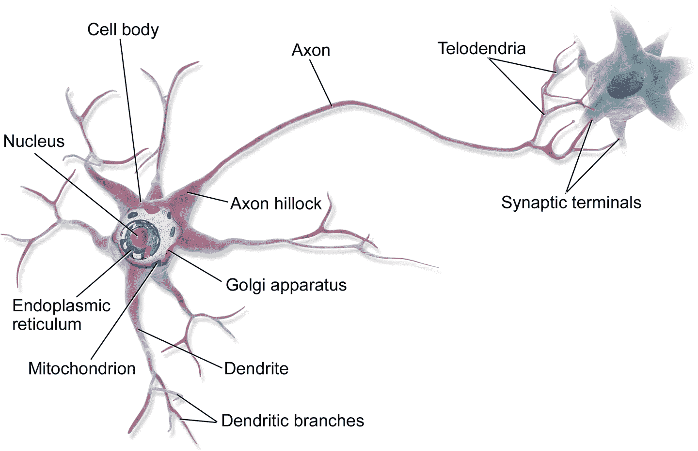
图 10-1 生物神经元
独立的生物神经元就是这样工作的
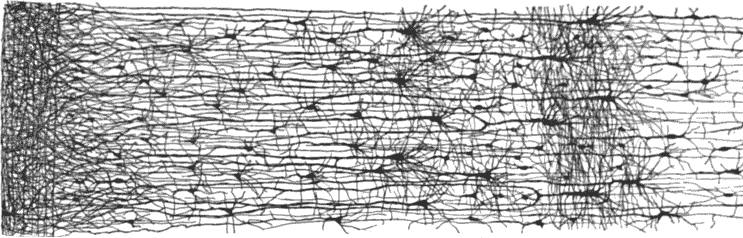
图 10-2 人类大脑皮质的多层神经元网络
神经元的逻辑计算
McCulloch 和 Pitts 提出了一个非常简单的生物神经元模型
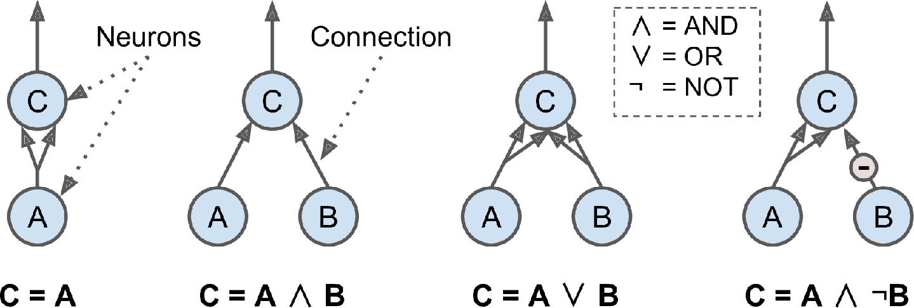
图 10-3 不同逻辑计算的 ANN
这些网络的逻辑计算如下
-
左边第一个网络是确认函数
： A被激活， C也被激活（ A的两个输入信号） ， A关闭， C也关闭。 -
第二个网络执行逻辑 AND
： C只有在激活神经元A和B（ C） 。 -
第三个网络执行逻辑 OR
： A或神经元B被激活（ ） ， C被激活。 -
最后
， （ ） ， ： B关闭， A是激活的， C才被激活。 A始终是激活的， ： C在神经元B关闭时是激活的， 。
你可以很容易地想到
感知机
感知器是最简单的人工神经网络结构之一z = W[1]x[1] + W[2]x[2]+ ... + W[n]x[n] = x^T · Wh[W](x) = step(z)z = x^T · W
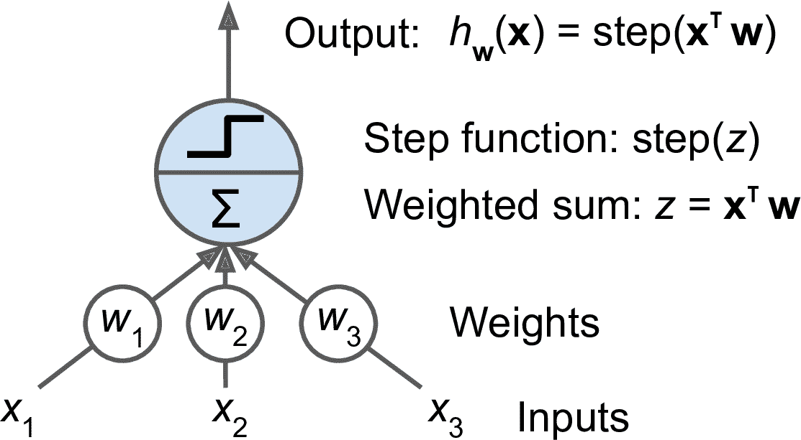
图 10-4 阈值逻辑单元
感知机最常用的阶跃函数是单位阶跃函数sgn
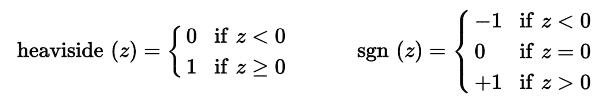
公式 10-1 感知机常用的阶跃函数
单一 TLU 可用于简单的线性二元分类x[0] = 1W[0], W[1]和W[2]值
感知器只由一层 TLU 组成X[0] = 1
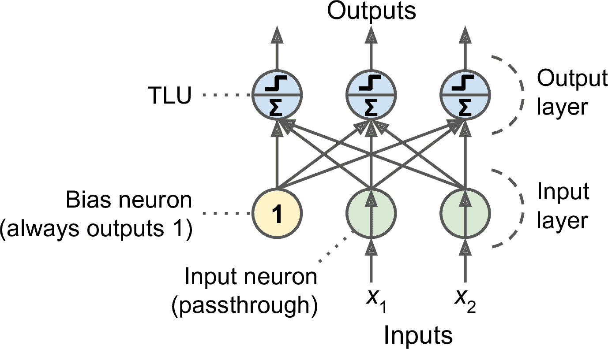
图 10-5 一个具有两个输入神经元
借助线性代数
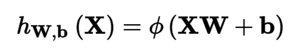
公式 10-2 计算一个全连接层的输出
在这个公式中
-
X表示输入特征矩阵， ， ； -
权重矩阵
W包含所有的连接权重， 。 ， ； -
偏置向量
b含有所有偏置神经元和人工神经元的连接权重。 ； -
函数
φ被称为激活函数， ， （ ） 。
那么感知器是如何训练的呢
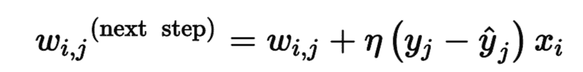
公式 10-3 感知机的学习规则
在这个公式中
-
其中
w[i, j]是第i个输入神经元与第j个输出神经元之间的连接权重； -
x[i]是当前训练实例的第i个输入值； -
y_hat[j]是当前训练实例的第j个输出神经元的输出； -
y[j]是当前训练实例的第j个输出神经元的目标输出； -
η是学习率。
每个输出神经元的决策边界是线性的
Scikit-Learn 提供了一个Perceptron类
import numpy as np
from sklearn.datasets import load_iris
from sklearn.linear_model import Perceptron
iris = load_iris()
X = iris.data[:, (2, 3)] # petal length, petal width
y = (iris.target == 0).astype(np.int) # Iris setosa?
per_clf = Perceptron()
per_clf.fit(X, y)
y_pred = per_clf.predict([[2, 0.5]])
你可能注意到Perceptron类相当于使用具有以下超参数的 SGDClassifierloss="perceptron"learning_rate="constant"eta0=1penalty=None
与逻辑回归分类器相反
在 1969 年题为
然而(0, 0)或(1, 1)网络输出 0(0, 1)或(1, 0)它输出 1
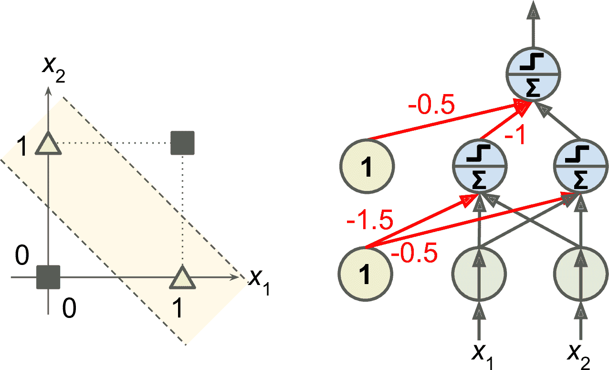
图 10-6 XOR 分类问题和 MLP
多层感知机与反向传播
MLP 由一个输入层
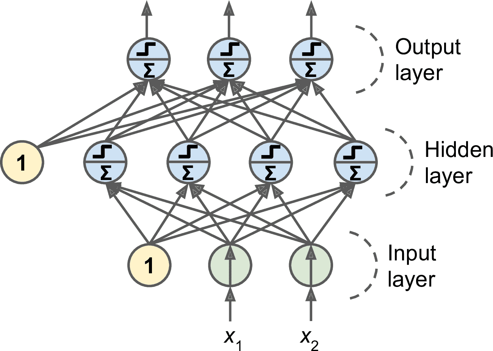
图 10-7 多层感知器
注意
信号是从输入到输出单向流动的 ： 因此这种架构被称为前馈神经网络 ， FNN （ ） 。
当人工神经网络有多个隐含层时
多年来
笔记
自动计算梯度被称为自动微分 ： 有多种自动微分的方法 。 各有优缺点 ， 反向传播使用的是反向模式自微分 。 这种方法快而准 。 当函数有多个变量 ， 连接权重 （ 和多个输出 ） 损失函数 （ 要微分时也能应对 ） 附录 D 介绍了自微分 。 。
对 BP 做详细分解
-
每次处理一个微批次
（ ） ， ， （ ） ； -
每个微批次先进入输入层
， 。 （ ） 。 ， 。 ： ， ， ； -
然后计算输出误差
（ ， ） ； -
接着
， 。 （ ） ； -
然后还是使用链式法则
， ， ， 。 -
最后
， ， 。
BP 算法十分重要
警告
随机初始化隐藏层的连接权重是很重要的 ： 假如所有的权重和偏置都初始化为 0 。 则在给定一层的所有神经元都是一样的 ， BP 算法对这些神经元的调整也会是一样的 ， 换句话 。 就算每层有几百个神经元 ， 模型的整体表现就像每层只有一个神经元一样 ， 模型会显得笨笨的 ， 如果权重是随机初始化的 。 就可以打破对称性 ， 训练出不同的神经元 ， 。
为了使 BP 算法正常工作σ(z) = 1 / (1 + exp(–z))
- 双曲正切函数
： tanh (z) = 2σ(2z) – 1
类似 Logistic 函数
- ReLU 函数
： ReLU(z) = max(0, z)
ReLU 函数是连续的z=0时不可微z<0时z=0
这些流行的激活函数及其变体如图 10-8 所示f(x) = 2x + 3 和 g(x) = 5x – 1 f(g(x)) = 2(5x – 1) + 3 = 10x + 1
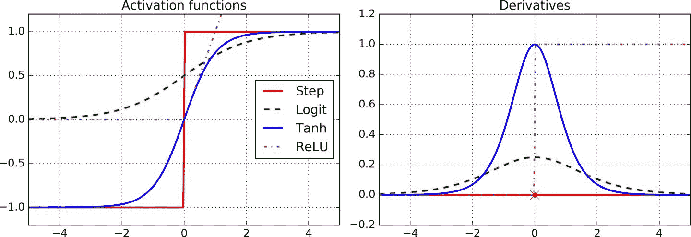
图 10-8 激活函数及其变体
知道了神经网络的起源
回归 MLP
首先
通常softplus(z) = log(1 + exp(z))z是负值时z是正值时z
训练中的损失函数一般是均方误差
提示
当误差小于阈值 ： δ时一般为 1 （ ） Huber 损失函数是二次的 ， 误差大于阈值时 ； Huber 损失函数是线性的 ， 相比均方误差 。 线性部分可以让 Huber 对异常值不那么敏感 ， 二次部分可以让收敛更快 ， 也比均绝对误差更精确 ， 。
表 10-1 总结了回归 MLP 的典型架构
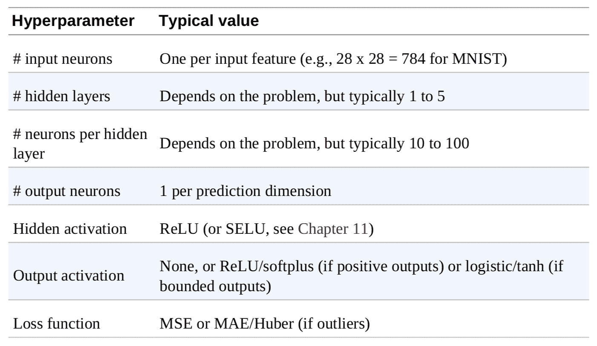
表 10-1 回归 MLP 的典型架构
分类 MLP
MLP 也可用于分类
MLP 也可以处理多标签二元分类
如果每个实例只能属于一个类
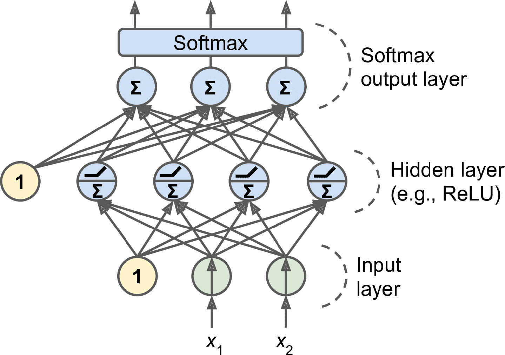
图 10-9 一个用于分类的 MLP
根据损失函数
表 10-2 概括了分类 MLP 的典型架构
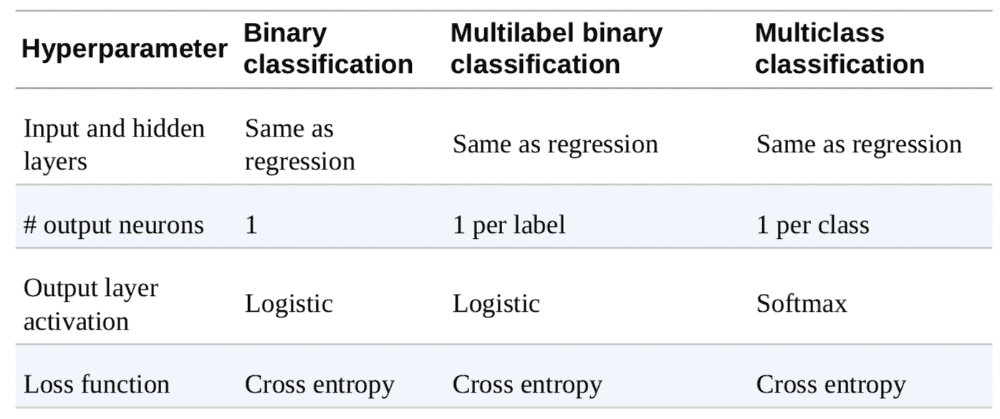
表 10-2 分类 MLP 的典型架构
提示
看下面的内容前 ： 建议看看本章末尾的习题 1 ， 利用 TensorFlow Playground 可视化各样的神经网络架构 。 可以更深入的理解 MLP 和超参数 ， 层数 （ 神经元数 、 激活函数 、 的作用 ） 。
用 Keras 实现 MLP
Keras 是一个深度学习高级 API
自从 2016 年底tf.kerastf.keras支持 TensorFlow 的 Data APItf.keras
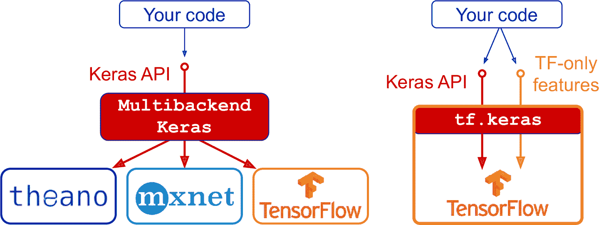
图 10-10 Keras API 的两个实现
排在 Keras 和 TensorFlow 之后最流行的深度学习库
安装 TensorFlow 2
假设已经在第 2 章中安装了 Jupyter 和 Scikit-Learn
$ cd $ML_PATH # Your ML working directory (e.g., $HOME/ml)
$ source my_env/bin/activate # on Linux or macOS
$ .\my_env\Scripts\activate # on Windows
然后安装 TensorFlow 2--user
$ python3 -m pip install --upgrade tensorflow
笔记
要使用 GPU 的话 ： 在动笔写书的此刻 ， 需要安装 ， tensorflow-gpu而不是 ， tensorflow但是 TensorFlow 团队正在开发一个既支持 CPU 也支持 GPU 的独立的库 。 要支持 GPU 的话 。 可能还要安装更多的库 ， 参考这里 ， 第 19 章会深入介绍 GPU 。 。
要测试安装是否成功tf.keras
>>> import tensorflow as tf
>>> from tensorflow import keras
>>> tf.__version__
'2.0.0'
>>> keras.__version__
'2.2.4-tf'
第二个版本号的末尾带有-tftf.keras实现的 Keras API
使用顺序 API 创建图片分类器
首先加载数据集28 × 28
使用 Keras 加载数据集
Keras 提供一些实用的函数用来获取和加载常见的数据集
fashion_mnist = keras.datasets.fashion_mnist
(X_train_full, y_train_full), (X_test, y_test) = fashion_mnist.load_data()
当使用 Keras 加载 MNIST 或 Fashion MNIST 时28 × 28的数组
>>> X_train_full.shape
(60000, 28, 28)
>>> X_train_full.dtype
dtype('uint8')
该数据集已经分成了训练集和测试集
X_valid, X_train = X_train_full[:5000] / 255.0, X_train_full[5000:] / 255.0
y_valid, y_train = y_train_full[:5000], y_train_full[5000:]
对于 MNIST
class_names = ["T-shirt/top", "Trouser", "Pullover", "Dress", "Coat",
"Sandal", "Shirt", "Sneaker", "Bag", "Ankle boot"]
例如
>>> class_names[y_train[0]]
'Coat'
图 10-11 展示了 Fashion MNIST 数据集的一些样本
图 10-11 Fashion MNIST 数据集的一些样本
用顺序 API 创建模型
搭建一个拥有两个隐含层的分类 MLP
model = keras.models.Sequential()
model.add(keras.layers.Flatten(input_shape=[28, 28]))
model.add(keras.layers.Dense(300, activation="relu"))
model.add(keras.layers.Dense(100, activation="relu"))
model.add(keras.layers.Dense(10, activation="softmax"))
逐行看下代码
-
第一行代码创建了一个顺序 模型
， ， ， ； -
接下来创建了第一层
， Flatten层， ： X， X.reshape(-1, 1)。 ， 。 ， input_shape， input_shape不包括批次大小， 。 ， keras.layers.InputLayer， input_shape=[28,28]; -
然后
， ， 。 ， 。 （ ） 。 ， ； -
接着再添加第二个紧密层
， ； -
最后
， （ ） ， （ ， ， ） 。
提示
设置 ： activation="relu"等同于 ， activation=keras.activations.relu。 keras.activations包中还有其它激活函数完整列表见这里 ， 。
除了一层一层加层
model = keras.models.Sequential([
keras.layers.Flatten(input_shape=[28, 28]),
keras.layers.Dense(300, activation="relu"),
keras.layers.Dense(100, activation="relu"),
keras.layers.Dense(10, activation="softmax")
])
使用 KERAS.IO 的代码实例
keras.io 上的代码也可以用于
tf.keras但是需要修改引入 ， 例如 。 对于下面的代码 ， ： from keras.layers import Dense output_layer = Dense(10)需要改成
： from tensorflow.keras.layers import Dense output_layer = Dense(10)或使用完整路径
： from tensorflow import keras output_layer = keras.layers.Dense(10)这么写就是麻烦点
但是我在本书中是采用的这种方法 ， 因为不仅可以容易看出使用的是哪个包 ， 还可以避免搞混标准类和自定义类 ， 在生产环境中 。 我倾向于使用前种方式 ， 还有人喜欢这样引入 。 ， tensorflow.keras import layers使用 ， layers.Dense(10)。
模型的summary()方法可以展示所有层None代表批次大小可以是任意值
>>> model.summary()
Model: "sequential"
_________________________________________________________________
Layer (type) Output Shape Param #
=================================================================
flatten (Flatten) (None, 784) 0
_________________________________________________________________
dense (Dense) (None, 300) 235500
_________________________________________________________________
dense_1 (Dense) (None, 100) 30100
_________________________________________________________________
dense_2 (Dense) (None, 10) 1010
=================================================================
Total params: 266,610
Trainable params: 266,610
Non-trainable params: 0
_________________________________________________________________
紧密层通常有许多参数784 × 300个连接权重
使用属性
>>> model.layers
[<tensorflow.python.keras.layers.core.Flatten at 0x132414e48>,
<tensorflow.python.keras.layers.core.Dense at 0x1324149b0>,
<tensorflow.python.keras.layers.core.Dense at 0x1356ba8d0>,
<tensorflow.python.keras.layers.core.Dense at 0x13240d240>]
>>> hidden1 = model.layers[1]
>>> hidden1.name
'dense'
>>> model.get_layer('dense') is hidden1
True
可以用get_weights()和set_weights()方法
>>> weights, biases = hidden1.get_weights()
>>> weights
array([[ 0.02448617, -0.00877795, -0.02189048, ..., -0.02766046,
0.03859074, -0.06889391],
...,
[-0.06022581, 0.01577859, -0.02585464, ..., -0.00527829,
0.00272203, -0.06793761]], dtype=float32)
>>> weights.shape
(784, 300)
>>> biases
array([0., 0., 0., 0., 0., 0., 0., 0., 0., ..., 0., 0., 0.], dtype=float32)
>>> biases.shape
(300,)
紧密层是随机初始化连接权重的kernel_initializerbias_initializer
笔记
权重矩阵的形状取决于输入的数量 ： 这就是为什么要在创建 。 Sequential模型的第一层时指定input_shape但是 。 如果不指定形状也没关系 ， Keras 会在真正搭建模型前一直等待 ： 直到弄清输入的形状 ， 输入真实数据时 （ 或调用 ， build()方法时） 在搭建模型之前 。 神经层是没有权重的 ， 也干不了什么事 ， 比如打印模型概要或保存模型 （ ） 所以如果在创建模型时知道输入的形状 。 最好就设置好 ， 。
编译模型
创建好模型之后compile()方法
model.compile(loss="sparse_categorical_crossentropy",
optimizer="sgd",
metrics=["accuracy"])
笔记
使用 ： loss="sparse_categorical_crossentropy"等同于loss=keras.losses.sparse_categorical_crossentropy相思的 。 ， optimizer="sgd"等同于optimizer=keras.optimizers.SGD()， metrics=["accuracy"]等同于metrics=[keras.metrics.sparse_categorical_accuracy]后面还会使用其他的损失函数 。 优化器和指标 、 它们的完整列表见这里 ， 这里 、 和这里 、 。
解释下这段代码"sparse_categorical_crossentropy"损失函数[0., 0., 0., 1., 0., 0., 0., 0., 0., 0.]"categorical_crossentropy"损失函数"sigmoid"激活函数"binary_crossentropy"
提示
如果要将稀疏标签转变为独热向量标签 ： 可以使用函数 ， keras.utils.to_categorical()还以使用函数 。 np.argmax()， axis=1。
对于优化器"sgd"表示使用随机梯度下降训练模型
笔记
使用 ： SGD时调整学习率很重要 ， 必须要手动设置好 ， ， optimizer=keras.optimizers.SGD(lr=???)。 optimizer="sgd"不同它的学习率默认为 ， lr=0.01。
最后"accuracy"
训练和评估模型
可以训练模型了fit()方法
>>> history = model.fit(X_train, y_train, epochs=30,
... validation_data=(X_valid, y_valid))
...
Train on 55000 samples, validate on 5000 samples
Epoch 1/30
55000/55000 [======] - 3s 49us/sample - loss: 0.7218 - accuracy: 0.7660
- val_loss: 0.4973 - val_accuracy: 0.8366
Epoch 2/30
55000/55000 [======] - 2s 45us/sample - loss: 0.4840 - accuracy: 0.8327
- val_loss: 0.4456 - val_accuracy: 0.8480
[...]
Epoch 30/30
55000/55000 [======] - 3s 53us/sample - loss: 0.2252 - accuracy: 0.9192
- val_loss: 0.2999 - val_accuracy: 0.8926
这里fit()方法传递了输入特征(X_train)和目标类(y_train)
仅需如此
提示
除了通过参数 ： validation_data传递验证集也可以通过参数 ， validation_split从训练集分割出一部分作为验证集比如 。 ， validation_split=0.1可以让 Keras 使用训练数据打散前 （ 的末尾 10% 作为验证集 ） 。
如果训练集非常倾斜fit()时最好设置class_weight参数sample_weightclass_weightvalidation_data元组中
fit()方法会返回History对象history.paramshistory.epochhistory.historyDataFrameplot()
import pandas as pd
import matplotlib.pyplot as plt
pd.DataFrame(history.history).plot(figsize=(8, 5))
plt.grid(True)
plt.gca().set_ylim(0, 1) # set the vertical range to [0-1]
plt.show()
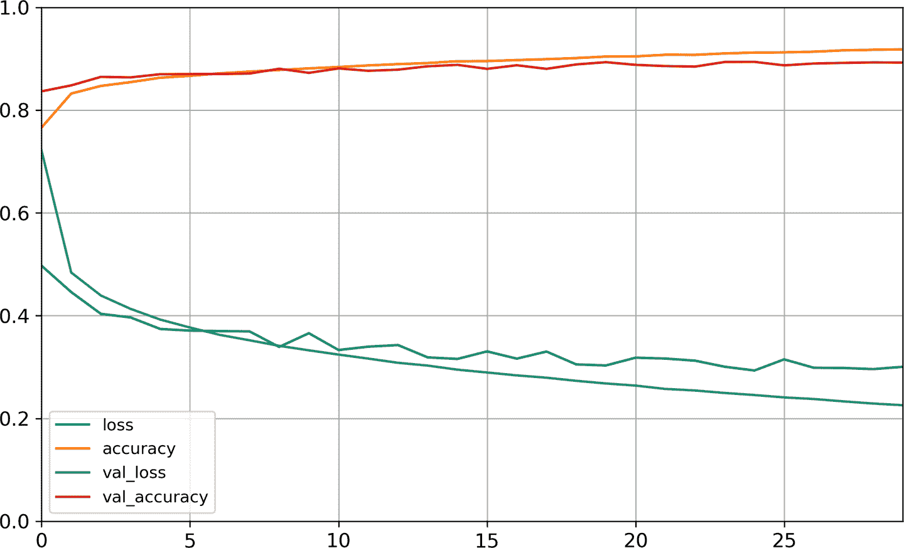
图 10-12 学习曲线
可以看到
提示
在绘制训练曲线时 ： 应该向左移动半个周期 ， 。
通常只要训练时间足够长fit()即可
如果仍然对模型的表现不满意fit()的参数batch_sizeevaluate()方法evaluate()方法包含参数batch_size和sample_weight
>>> model.evaluate(X_test, y_test)
10000/10000 [==========] - 0s 29us/sample - loss: 0.3340 - accuracy: 0.8851
[0.3339798209667206, 0.8851]
正如第 2 章所见
使用模型进行预测
接下来predict()方法对新实例做预测了
>>> X_new = X_test[:3]
>>> y_proba = model.predict(X_new)
>>> y_proba.round(2)
array([[0\. , 0\. , 0\. , 0\. , 0\. , 0.03, 0\. , 0.01, 0\. , 0.96],
[0\. , 0\. , 0.98, 0\. , 0.02, 0\. , 0\. , 0\. , 0\. , 0\. ],
[0\. , 1\. , 0\. , 0\. , 0\. , 0\. , 0\. , 0\. , 0\. , 0\. ]],
dtype=float32)
可以看到predict_classes()
>>> y_pred = model.predict_classes(X_new)
>>> y_pred
array([9, 2, 1])
>>> np.array(class_names)[y_pred]
array(['Ankle boot', 'Pullover', 'Trouser'], dtype='<U11')
对于这 3 个实例
>>> y_new = y_test[:3]
>>> y_new
array([9, 2, 1])
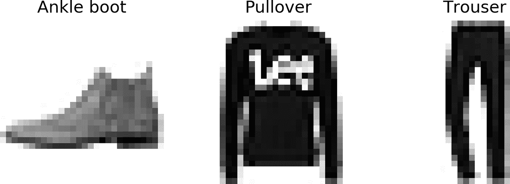
图 10-13 正确分类的 Fashion MNIST 图片
到此为止
使用顺序 API 搭建回归 MLP
接下来使用回归神经网络来处理加州房价问题fetch_california_housing()函数来加载数据ocean_proximity
from sklearn.datasets import fetch_california_housing
from sklearn.model_selection import train_test_split
from sklearn.preprocessing import StandardScaler
housing = fetch_california_housing()
X_train_full, X_test, y_train_full, y_test = train_test_split(
housing.data, housing.target)
X_train, X_valid, y_train, y_valid = train_test_split(
X_train_full, y_train_full)
scaler = StandardScaler()
X_train = scaler.fit_transform(X_train)
X_valid = scaler.transform(X_valid)
X_test = scaler.transform(X_test)
使用顺序 API 搭建
model = keras.models.Sequential([
keras.layers.Dense(30, activation="relu", input_shape=X_train.shape[1:]),
keras.layers.Dense(1)
])
model.compile(loss="mean_squared_error", optimizer="sgd")
history = model.fit(X_train, y_train, epochs=20,
validation_data=(X_valid, y_valid))
mse_test = model.evaluate(X_test, y_test)
X_new = X_test[:3] # pretend these are new instances
y_pred = model.predict(X_new)
可以看到Sequential十分常见
使用函数式 API 搭建复杂模型
Wide & Deep 是一个非序列化的神经网络模型
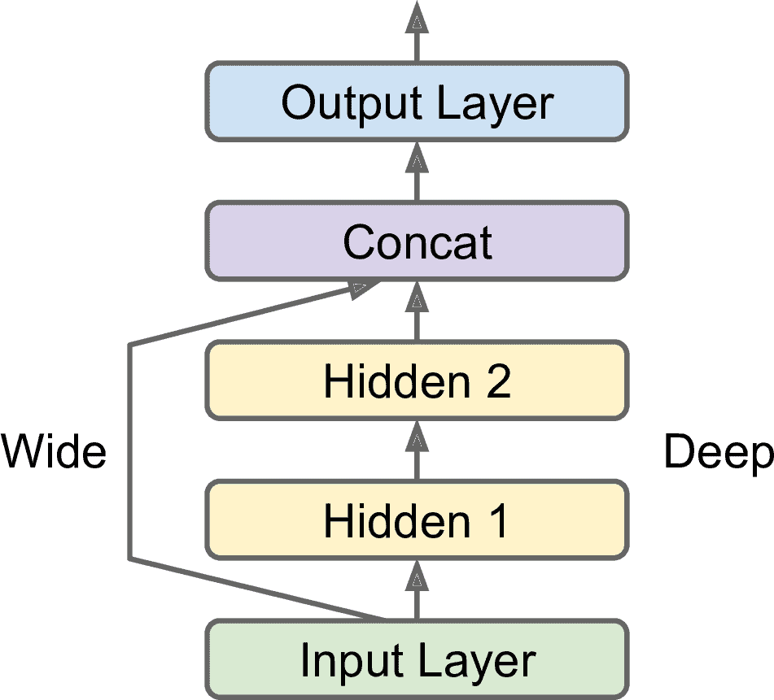
图 10-14 Wide & Deep 神经网络
我们来搭建一个这样的神经网络
input_ = keras.layers.Input(shape=X_train.shape[1:])
hidden1 = keras.layers.Dense(30, activation="relu")(input_)
hidden2 = keras.layers.Dense(30, activation="relu")(hidden1)
concat = keras.layers.Concatenate()([input_, hidden2])
output = keras.layers.Dense(1)(concat)
model = keras.Model(inputs=[input_], outputs=[output])
每行代码的作用
-
首先创建一个
Input对象。 shape和数据类型dtype。 。 -
然后
， ， 。 ， ， 。 。 ， 。 -
然后创建第二个隐藏层
， ， ； -
接着
， Concatenate层， ， 。 keras.layers.concatenate()。 -
然后创建输出层
， ， ， 。 -
最后
， Model， 。
搭建好模型之后
但是如果你想将部分特征发送给 wide 路径
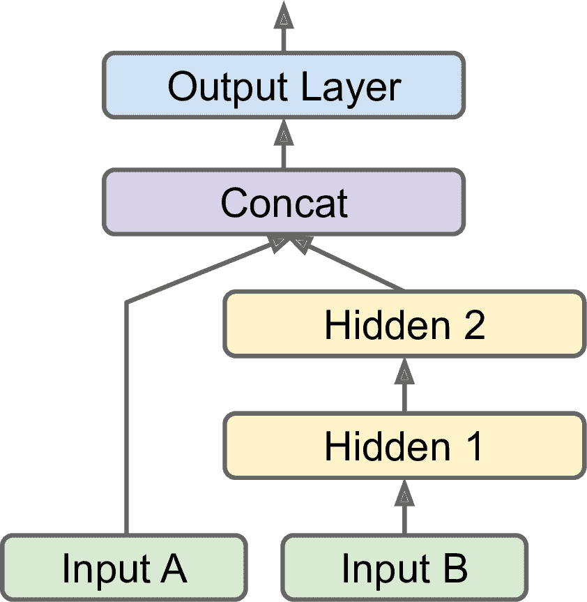
图 10-15 处理多输入
input_A = keras.layers.Input(shape=[5], name="wide_input")
input_B = keras.layers.Input(shape=[6], name="deep_input")
hidden1 = keras.layers.Dense(30, activation="relu")(input_B)
hidden2 = keras.layers.Dense(30, activation="relu")(hidden1)
concat = keras.layers.concatenate([input_A, hidden2])
output = keras.layers.Dense(1, name="output")(concat)
model = keras.Model(inputs=[input_A, input_B], outputs=[output])
代码非常浅显易懂inputs=[input_A, input_B]fit()时X_train(X_train_A, X_train_B)evaluate()或predict()时X_validX_testX_new也要变化
model.compile(loss="mse", optimizer=keras.optimizers.SGD(lr=1e-3))
X_train_A, X_train_B = X_train[:, :5], X_train[:, 2:]
X_valid_A, X_valid_B = X_valid[:, :5], X_valid[:, 2:]
X_test_A, X_test_B = X_test[:, :5], X_test[:, 2:]
X_new_A, X_new_B = X_test_A[:3], X_test_B[:3]
history = model.fit((X_train_A, X_train_B), y_train, epochs=20,
validation_data=((X_valid_A, X_valid_B), y_valid))
mse_test = model.evaluate((X_test_A, X_test_B), y_test)
y_pred = model.predict((X_new_A, X_new_B))
有以下要使用多输入的场景
-
任务要求
。 ， 。 （ 、 ） 。 -
相似的
， ， 。 ， ， ， ， 。 。 ， ， （ ） ， 。 -
另一种情况是作为一种正则的方法
（ ， ） 。 ， （ ） ， 。
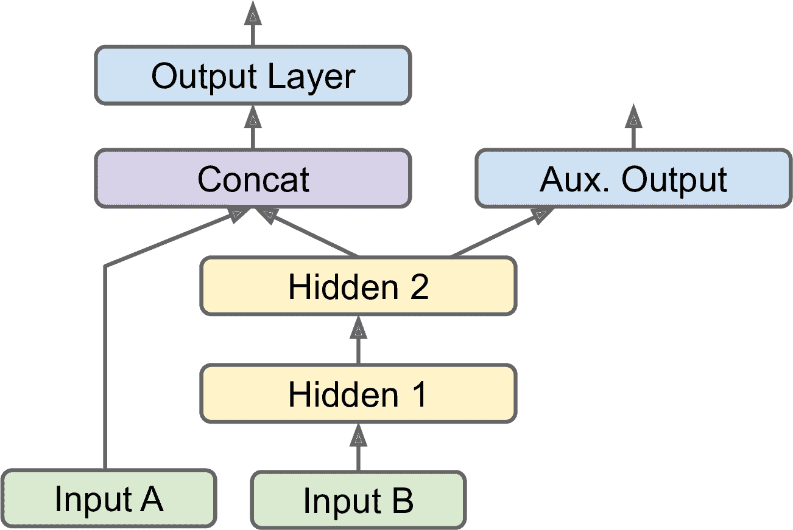
图 10-16 处理多输入
添加额外的输出很容易
[...] # output 层前面都一样
output = keras.layers.Dense(1, name="main_output")(concat)
aux_output = keras.layers.Dense(1, name="aux_output")(hidden2)
model = keras.Model(inputs=[input_A, input_B], outputs=[output, aux_output])
每个输出都要有自己的损失函数
model.compile(loss=["mse", "mse"], loss_weights=[0.9, 0.1], optimizer="sgd")
此时若要训练模型(y_train, y_train)y_valid和y_test也是如此
history = model.fit(
[X_train_A, X_train_B], [y_train, y_train], epochs=20,
validation_data=([X_valid_A, X_valid_B], [y_valid, y_valid]))
当评估模型时
total_loss, main_loss, aux_loss = model.evaluate(
[X_test_A, X_test_B], [y_test, y_test])
相似的predict()会返回每个输出的预测值
y_pred_main, y_pred_aux = model.predict([X_new_A, X_new_B])
可以看到
使用子类化 API 搭建动态模型
顺序 API 和函数式 API 都是声明式的
对Model类划分子类call()进行计算WideAndDeepModel类的实例
class WideAndDeepModel(keras.Model):
def __init__(self, units=30, activation="relu", **kwargs):
super().__init__(**kwargs) # handles standard args (e.g., name)
self.hidden1 = keras.layers.Dense(units, activation=activation)
self.hidden2 = keras.layers.Dense(units, activation=activation)
self.main_output = keras.layers.Dense(1)
self.aux_output = keras.layers.Dense(1)
def call(self, inputs):
input_A, input_B = inputs
hidden1 = self.hidden1(input_B)
hidden2 = self.hidden2(hidden1)
concat = keras.layers.concatenate([input_A, hidden2])
main_output = self.main_output(concat)
aux_output = self.aux_output(hidden2)
return main_output, aux_output
model = WideAndDeepModel()
这个例子和函数式 API 很像call()使用参数inputcall()方法中for循环if语句
然而代价也是有的call()方法中summary()时
提示
可以像常规层一样使用 Keras 模型 ： 组合模型搭建任意复杂的架构 ， 。
学会了搭建和训练神经网络
保存和恢复模型
使用顺序 API 或函数式 API 时
model = keras.layers.Sequential([...]) # or keras.Model([...])
model.compile([...])
model.fit([...])
model.save("my_keras_model.h5")
Keras 使用 HDF5 格式保存模型架构
通常用脚本训练和保存模型
model = keras.models.load_model("my_keras_model.h5")
警告
这种加载模型的方法只对顺序 API 或函数式 API 有用 ： 不适用于子类化 API ， 对于后者 。 可以用 ， save_weights()和load_weights()保存参数其它的就得手动保存恢复了 ， 。
但如果训练要持续数个小时呢fit()保存检查点呢
使用调回
fit()方法接受参数callbacksModelCheckpoint可以在每个时间间隔保存检查点
[...] # 搭建编译模型
checkpoint_cb = keras.callbacks.ModelCheckpoint("my_keras_model.h5")
history = model.fit(X_train, y_train, epochs=10, callbacks=[checkpoint_cb])
另外save_best_only=True
checkpoint_cb = keras.callbacks.ModelCheckpoint("my_keras_model.h5",
save_best_only=True)
history = model.fit(X_train, y_train, epochs=10,
validation_data=(X_valid, y_valid),
callbacks=[checkpoint_cb])
model = keras.models.load_model("my_keras_model.h5") # roll back to best model
另一种实现早停的方法是使用EarlyStopping调回patience确定
early_stopping_cb = keras.callbacks.EarlyStopping(patience=10,
restore_best_weights=True)
history = model.fit(X_train, y_train, epochs=100,
validation_data=(X_valid, y_valid),
callbacks=[checkpoint_cb, early_stopping_cb])
周期数可以设的很大EarlyStopping调回一直在跟踪最优权重
提示
包 ： keras.callbacks中还有其它可用的调回。
如果还想有其它操控
class PrintValTrainRatioCallback(keras.callbacks.Callback):
def on_epoch_end(self, epoch, logs):
print("\nval/train: {:.2f}".format(logs["val_loss"] / logs["loss"]))
类似的on_train_begin()on_train_end()on_epoch_begin()on_epoch_end()on_batch_begin()on_batch_end()on_test_begin()on_test_end()on_test_batch_begin()或on_test_batch_end()evaluate()调用on_predict_begin()on_predict_end()on_predict_batch_begin()或on_predict_batch_end()predict()调用
下面来看一个使用tf.keras的必备工具
使用 TensorBoard 进行可视化
TensorBoard 是一个强大的交互可视化工具
要使用 TensorBoardevent filessummary
我们先定义 TensorBoard 的根日志目录
import os
root_logdir = os.path.join(os.curdir, "my_logs")
def get_run_logdir():
import time
run_id = time.strftime("run_%Y_%m_%d-%H_%M_%S")
return os.path.join(root_logdir, run_id)
run_logdir = get_run_logdir() # e.g., './my_logs/run_2019_06_07-15_15_22'
Keras 提供了一个TensorBoard()调回
[...] # 搭建编译模型
tensorboard_cb = keras.callbacks.TensorBoard(run_logdir)
history = model.fit(X_train, y_train, epochs=30,
validation_data=(X_valid, y_valid),
callbacks=[tensorboard_cb])
简直不能再简单了TensorBoard()调回会负责创建日志目录
my_logs/
├── run_2019_06_07-15_15_22
│ ├── train
│ │ ├── events.out.tfevents.1559891732.mycomputer.local.38511.694049.v2
│ │ ├── events.out.tfevents.1559891732.mycomputer.local.profile-empty
│ │ └── plugins/profile/2019-06-07_15-15-32
│ │ └── local.trace
│ └── validation
│ └── events.out.tfevents.1559891733.mycomputer.local.38511.696430.v2
└── run_2019_06_07-15_15_49
└── [...]
每次运行都会创建一个目录
然后就可以启动 TensorBoard 服务了
$ tensorboard --logdir=./my_logs --port=6006
TensorBoard 2.0.0 at http://mycomputer.local:6006/ (Press CTRL+C to quit)
如果终端没有找到tensorboard命令PATHpython3 -m tensorboard.mainhttp://localhost:6006
或者
%load_ext tensorboard
%tensorboard --logdir=./my_logs --port=6006
无论是使用哪种方式SCALARS可以查看学习曲线epoch_lossoptimizer=keras.optimizers.SGD(lr=0.05)
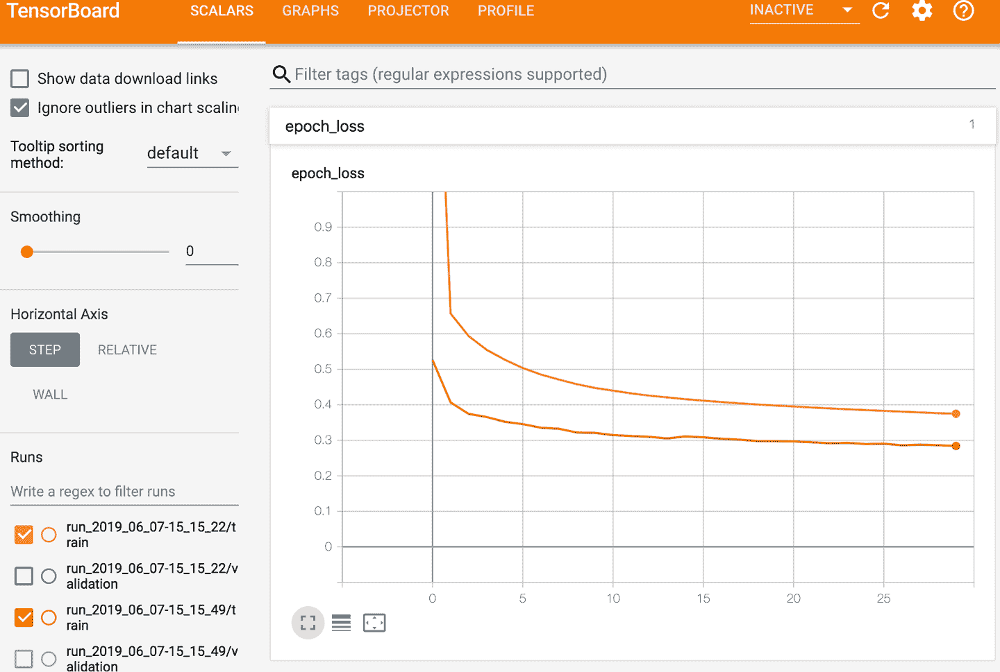
图 10-17 使用 TensorBoard 可视化学习曲线
还可以对全图TensorBoard()调回还有选项可以记录其它数据的日志tf.summary包中还提供了低级 APIcreate_file_writer()创建了SummaryWriterSummaryWriter作为记录标量
test_logdir = get_run_logdir()
writer = tf.summary.create_file_writer(test_logdir)
with writer.as_default():
for step in range(1, 1000 + 1):
tf.summary.scalar("my_scalar", np.sin(step / 10), step=step)
data = (np.random.randn(100) + 2) * step / 100 # some random data
tf.summary.histogram("my_hist", data, buckets=50, step=step)
images = np.random.rand(2, 32, 32, 3) # random 32×32 RGB images
tf.summary.image("my_images", images * step / 1000, step=step)
texts = ["The step is " + str(step), "Its square is " + str(step**2)]
tf.summary.text("my_text", texts, step=step)
sine_wave = tf.math.sin(tf.range(12000) / 48000 * 2 * np.pi * step)
audio = tf.reshape(tf.cast(sine_wave, tf.float32), [1, -1, 1])
tf.summary.audio("my_audio", audio, sample_rate=48000, step=step)
总结一下目前所学
微调神经网络的超参数
神经网络的灵活性同时也是它的缺点
一种方法是直接试验超参数的组合GridSearchCV或RandomizedSearchCV探索超参数空间
def build_model(n_hidden=1, n_neurons=30, learning_rate=3e-3, input_shape=[8]):
model = keras.models.Sequential()
model.add(keras.layers.InputLayer(input_shape=input_shape))
for layer in range(n_hidden):
model.add(keras.layers.Dense(n_neurons, activation="relu"))
model.add(keras.layers.Dense(1))
optimizer = keras.optimizers.SGD(lr=learning_rate)
model.compile(loss="mse", optimizer=optimizer)
return model
这个函数创建了一个单回归SGD优化器编译
然后使用函数build_model()创建一个KerasRegressor
keras_reg = keras.wrappers.scikit_learn.KerasRegressor(build_model)
KerasRegressor是通过build_model()将 Keras 模型包装起来的build_model()的默认参数fit()方法训练score()方法评估predict()方法预测
keras_reg.fit(X_train, y_train, epochs=100,
validation_data=(X_valid, y_valid),
callbacks=[keras.callbacks.EarlyStopping(patience=10)])
mse_test = keras_reg.score(X_test, y_test)
y_pred = keras_reg.predict(X_new)
任何传给fit()的参数都会传给底层的 Keras 模型
from scipy.stats import reciprocal
from sklearn.model_selection import RandomizedSearchCV
param_distribs = {
"n_hidden": [0, 1, 2, 3],
"n_neurons": np.arange(1, 100),
"learning_rate": reciprocal(3e-4, 3e-2),
}
rnd_search_cv = RandomizedSearchCV(keras_reg, param_distribs, n_iter=10, cv=3)
rnd_search_cv.fit(X_train, y_train, epochs=100,
validation_data=(X_valid, y_valid),
callbacks=[keras.callbacks.EarlyStopping(patience=10)])
所做的和第 2 章差不多fit()fit()再传给底层的 KerasRandomizedSearchCV使用的是 K 折交叉验证X_valid和y_valid
取决于硬件n_iter和cv
>>> rnd_search_cv.best_params_
{'learning_rate': 0.0033625641252688094, 'n_hidden': 2, 'n_neurons': 42}
>>> rnd_search_cv.best_score_
-0.3189529188278931
>>> model = rnd_search_cv.best_estimator_.model
现在就可以保存模型
幸好
Hyperopt
一个可以优化各种复杂搜索空间
Hyperas
用来优化 Keras 模型超参数的库
Keras Tuner
Google 开发的简单易用的 Keras 超参数优化库
Scikit-Optimize (skopt)
一个通用的优化库BayesSearchCV使用类似于GridSearchCV的接口做贝叶斯优化
Spearmint
一个贝叶斯优化库
Hyperband
一个快速超参数调节库
Sklearn-Deap
一个基于进化算法的超参数优化库GridSearchCV
另外
超参数调节仍然是活跃的研究领域
尽管有这些工具和服务
隐藏层数
对于许多问题
要明白为什么
层级化的结构不仅帮助深度神经网络收敛更快
概括来讲
每个隐藏层的神经元数
输入层和输出层的神经元数是由任务确定的输入和输出类型决定的28 × 28 = 784个输入神经元和 10 个输出神经元
对于隐藏层
和层数相同
提示
通常 ： 增加层数比增加每层的神经元的收益更高 ， 。
， ，
隐藏层的层数和神经元数不是 MLP 唯二要调节的参数
学习率
学习率可能是最重要的超参数10^(-5)exp(log(10^6)/50010^(-5)到 10
优化器
选择一个更好的优化器
批次大小
批次大小对模型的表现和训练时间非常重要
激活函数
本章一开始讨论过如何选择激活函数
迭代次数
对于大多数情况
提示
最佳学习率还取决于其它超参数 ： 特别是批次大小 ， 所以如果调节了任意超参数 ， 最好也更新学习率 ， 。
想看更多关于调节超参数的实践
这章总结了对人工神经网络
练习
- TensorFlow Playground 是 TensorFlow 团队推出的一个便利的神经网络模拟器
。 ， ， ， ， 。 ：
a. 神经网络学到的模式
b. 激活函数
c. 局部最小值的风险Reset按钮
d. 神经网络太小的状况
e. 神经网络足够大的状况
f. 梯度消失的风险
g. 再尝试尝试其它参数
-
用原始神经元
（ ） ， A ⊕ B（ ⊕表示 XOR 操作） 。 ： A ⊕ B = (A ∧ ¬B ∨ (¬A ∧ B) -
为什么逻辑回归比经典感知机
（ ） ？ ， ？ -
为什么逻辑激活函数对训练 MLP 的前几层很重要
？ -
说出三种流行的激活函数
， 。 -
假设一个 MLP 的输入层有 10 个神经元
， ， 。 。 ：
-
输入矩阵
X的形状是什么？ -
隐藏层的权重向量
W[h]和偏置项b[h]的形状是什么? -
输出层的权重向量
W[o]和偏置项b[o]的形状是什么? -
输出矩阵
Y的形状是什么？ -
写出用
X, W[h], b[h], W[o], b[o]计算矩阵Y的等式。
-
如果要将邮件分为垃圾邮件和正常邮件
， ？ ？ ， ， ？ ， ？ -
反向传播是什么及其原理
？ ？ -
列出所有简单 MLP 中需要调节的超参数
？ ， ？ -
在 MNIST 数据及上训练一个深度 MLP
。
使用keras.datasets.mnist.load_data()加载数据
参考答案见附录 A